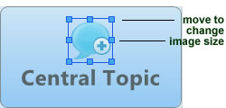

XMind has prepared more than one hundred high-quality images in the Gallery that you can use in your maps. You can easily add images into a map or change, format, or delete added images. Here's how:
Add an image to topic:
- Select the topic(s).
- Open the Gallery View; or click image icon on the toolbar and select 'From Gallery'.
- Choose and double-click on the image that you want to use.


Note: you can select multiple topics and add one image to each of these topics at the same time.
To Format the added image:
- Select the topic.
- Select the added image.
- Right-click mouse and select properties to change size of this image. Or directly drag the window corner to change the size.

To Change image:
- Select the topic.
- Open Gallery View; or click image icon on the toolbar and select 'From Gallery'.
- Choose another image and double-click it.
Delete image:
- Select the topic.
- Select the image.
- Click 'delete' key on the board; or Right-click your mouse and choose 'delete'.